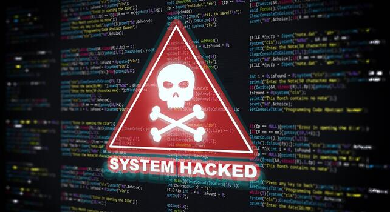
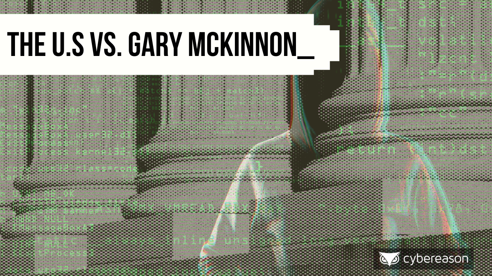

Hvad er det?
virtual hacking refers to the practice of conducting cyberattacks or penetration testing within simulated, isolated environments (virtual machines) rather than on real-world systems. It serves as a secure "sandbox" that allows security professionals and students to learn, test exploits, and study malware without risking damage to their primary hardware, network, or data.
Virtual hacking metoder
Der findes mange former for virtuel hacking, der er mere tekniske eller manipulerede end shoulder surfing (at kigge over skulderen). Her er en oversigt over de mest almindelige former, opdelt efter type:
Teknisk Hacking (Malware og systemangreb)
- Phishing/Spear Phishing.
- Vishing/Smishing.
- Baiting.
- Pretexting.
- Watering Hole Attack.
Adgangskode- og netværksangreb
- Malware-hacking.
- Ransomware.
- Keyloggers.
- DDoS (Distributed Denial of Service).
- Man-in-the-Middle (MitM).
- Cookie Theft (Session Hijacking).
Social Engineering (Manipulation af mennesker)
- Credential Stuffing.
- Brute Force Attacks.
- SQL Injection.
- Fake WAP (Wireless Access Point).
Formål
Formålet med "virtual hacking" (ofte omtalt som at bruge virtuelle maskiner/labs til hacking) er primært at skabe et sikkert, isoleret og lovligt miljø for at lære, teste og forbedre cybersikkerhedsfærdigheder uden at skade virkelige systemer.
konsekvenser
Virtual hacking (hacking af virtuelle miljøer som VR/AR) og generel digital hacking har en række alvorlige konsekvenser, der spænder fra personlige krænkelser til store økonomiske tab for virksomheder. Konsekvenserne kan opdeles i fysiske, psykiske og digitale risici.
-
Manipulation af VR-indhold og fysisk ubehag: Hvis hackere overtager et VR-headset, kan de manipulere det indhold, brugeren ser. Dette kan skabe desorientering, kvalme og svimmelhed.
-
Identitetstyveri og overvågning:Hackere kan få adgang til personlige oplysninger, private data og overvåge brugere gennem VR-headsets eller tilkoblede enheder.
-
Finansielle tab:Hacking kan føre til direkte tyveri af penge fra bankkonti, misbrug af kreditkortoplysninger eller økonomiske tab for virksomheder gennem nedetid.
Tab af omdømme og tillid:Virksomheder, der rammes af cyberangreb, kan miste kunder og samarbejdspartneres tillid.
-
Datatab:Vigtige data kan blive slettet, stjålet eller krypteret (ransomware).
Digital stalking og chikane:VR-platforme kan misbruges til uønsket overvågning og digital chikane.
Symptomer at være hacket
Tegn på hacking inkluderer, at enheder opfører sig mærkeligt (fryser, genstarter), uventet aktivitet på konti, eller at man bliver udelukket fra sine egne profiler.

Hvordan beskytter man sig?
At beskytte sig mod "virtual hacking" (cyberangreb, phishing og datatyveri) kræver en kombination af tekniske foranstaltninger og sund fornuft. Her er de mest effektive metoder baseret på ekspertråd:
-
Adgangskoder og Login
Brug stærke og unikke adgangskoder,Anvend en Password Manager,Aktivér To-faktor-godkendelse (2FA/MFA).
-
Software og Enheder
oftware og Enheder Opdatér alt software med det samme,Installer Antivirus/Antimalware, Brug Firewall.
Online Adfærd og Sikkerhed
Vær kritisk over for links og vedhæftede filer, Brug VPN på offentligt Wi-Fi, Tjek for "HTTPS".
Forebyggelse af Identitetstyveri og Svindel
Spot AI-genereret indhold og deepfakes,Pas på med deling af oplysninger.

Mathew Bevan(1996)
Attempting to prove a UFO conspiracy theory.
Equifax Data Breach (2017)
exploited a known vulnerability to access personal records of nearly 148 million people
Nogle Virkelige Cases

Gary McKinnon (2001-2002)
accused of breaching 97 U.S. military and NASA computers.

Ronin Network Crypto Theft (2022)
North Korean hackers stole over $540 million in cryptocurrency.
Den kaffetrængende praktikant
Du sidder på en travl café og arbejder på en vigtig præsentation, du skal vise din vejleder i morgen. Din hjerne trænger til en pause, og din kop er tom. Du rejser dig for at gå op til baren.
Hvad gør du med din bærbare computer?
konsekvens
Mens du står i køen, ser du en gruppe teenagere gå forbi dit bord. En af dem taber en krumme på dit tastatur, og en anden kigger nysgerrigt på din skærm, hvor der står
Udfald
Du får din kaffe, men du føler dig ubehagelig til mode over sikkerhedsbristen. Din vejleder nævner senere vigtigheden af IT-sikkerhed, og du får røde ører.
konsekvens
Mens du venter på din drink, bliver pladsen ved siden af dig i køen ledig. En person ser dit firmas logo på din taske og siger: "Arbejder du hos [Virksomhedsnavn]? Jeg kender jeres afdelingsleder!"
Udfald
Du ender i en fem-minutters samtale, der viser sig at være et potentielt netværkslink. Når du kommer ned til dit bord, er din plads dog taget, og du må finde et nyt sted at sidde.
konsekvens
Nogen kan stadigvæk sætte en usb i your computer og give den et virus. Selvom virussen ikke virker, mens pc'en er slukket, aktiveres truslen i det øjeblik, du tænder den.
Udfald
Virusen ødelagger dine filer og gør, at din computer viser "blue screen of death".
konsekvens
Sidemanden nikker venligt. Da du kommer tilbage med din iskaffe, viser det sig, at vedkommende også er studerende/praktikant inden for samme branche.
Udfald
Sidemanden forstår rent faktisk indholdet på din skærm,hvilket er risikabelt, isaær hvis du arbejder på noget fortroligt.